DAY 01 / POST 1
NIYYAH is here.
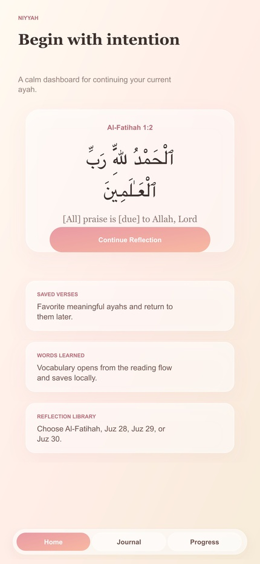
NIYYAH is a calm Qur'an learning companion built for reading, understanding, reflection, and private Circles. The beta is free. Link in bio.
Thirty days of posts, creator scripts, outreach, KPIs, downloadable assets, and the exact steps to submit NIYYAH.
Post Day 1, send five creator messages, finish the release checklist, and submit the build when every launch blocker is checked.
Ninety carousels at three per day. Open a day, preview each post, and copy its caption.

NIYYAH is a calm Qur'an learning companion built for reading, understanding, reflection, and private Circles. The beta is free. Link in bio.
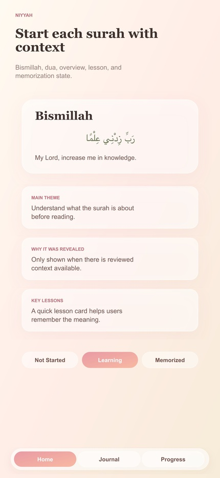
You do not need to finish a whole surah today. Start with one ayah, understand what you can, and return gently.
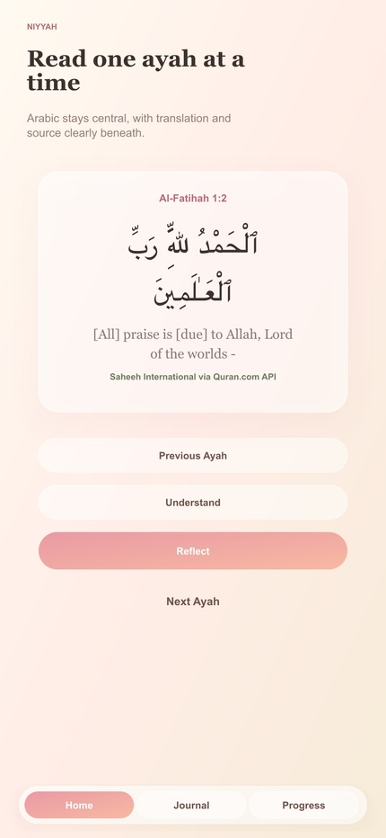
The core Qur'an learning experience is free in NIYYAH's beta. No guilt, no fake urgency, and no paywall around understanding the Qur'an.
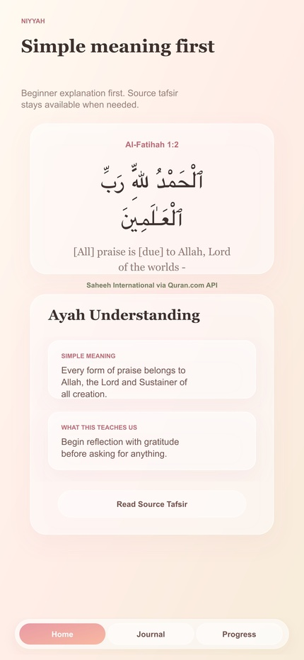
Busy day? Open the ayah you left, take one small action, and close with intention.
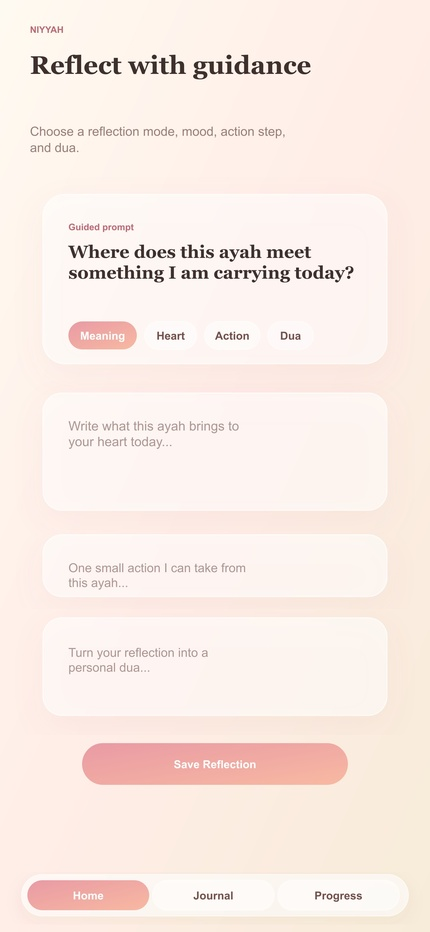
Context can change the way a surah opens up. NIYYAH begins with an overview and only shows reviewed revelation context where it is available.
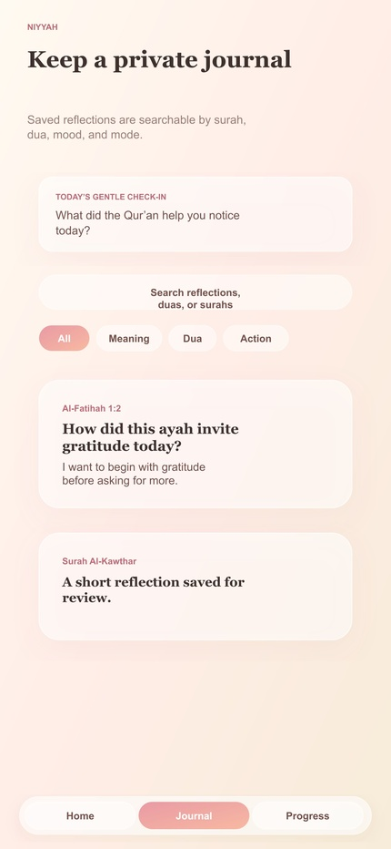
Verified recitation stays inside the reading experience so you can listen without losing your place.
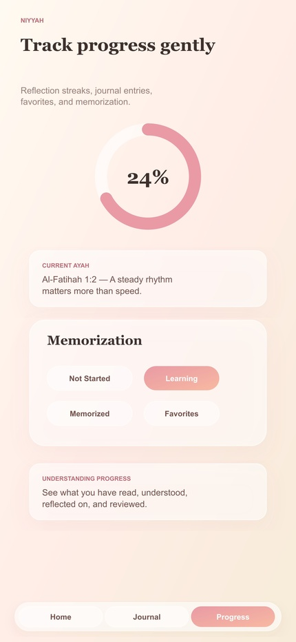
NIYYAH Circles are private spaces for family, friends, classes, and MSAs. No public feed. No follower count. Just learning together.
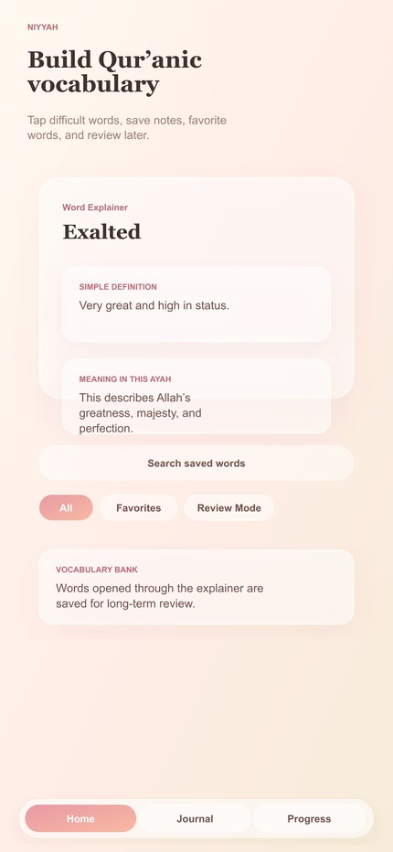
One shared ayah can start a meaningful family conversation. Who would you invite first?
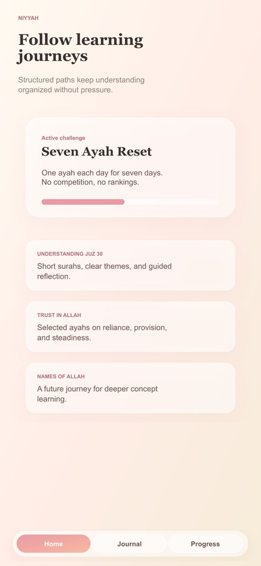
MSA challenge: choose one short surah, make a seven-day Circle, and check in together without rankings.
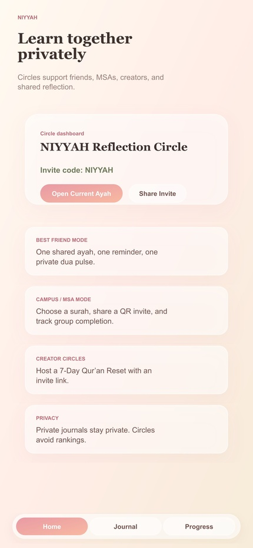
A Qur'an app should tell you where its content comes from. NIYYAH keeps source material and educational tools clearly separated.
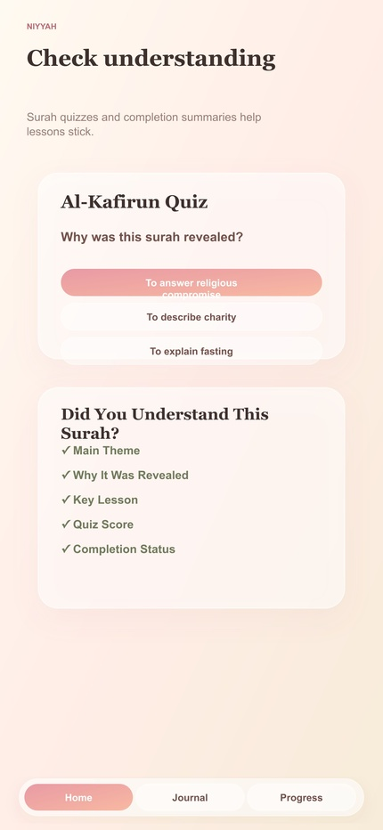
Where attributed source tafsir is unavailable, NIYYAH leaves it out. It does not invent source tafsir or pretend an educational summary is one.
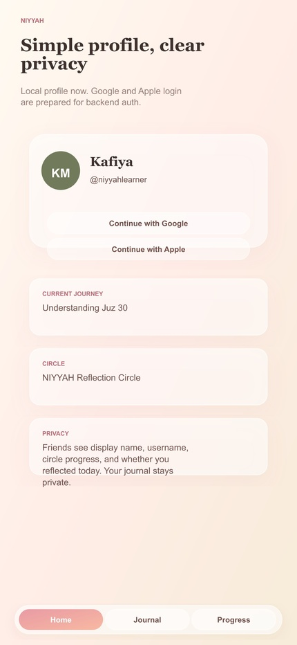
Qur'an recitation in NIYYAH uses verified reciter audio, never a generic AI voice.
Your reflection does not have to become a post. NIYYAH's journal is private by default.
Sometimes one honest question is enough to help an ayah stay with you.
Private journals, duas, and reflections should be treated with care, not turned into engagement content.
Save one Qur'anic word while you read, then return to it later. Small vocabulary growth adds up.
NIYYAH quizzes are light understanding checks, not spiritual rankings.
When you do not know where to begin, a guided Learning Journey gives you one clear next step.
Missed a day? You did not fail. NIYYAH is designed to help you continue without shame.
Progress can be visible without becoming competitive. Keep a gentle record of what you have read, learned, and reflected on.
NIYYAH brings you back to what matters: the ayah, the reflection, and the next small action.
Create a Circle, choose a simple purpose, and invite people you trust.
No audience needed. Share a private Circle code or QR invitation with the people you actually want to learn with.
Accountability can sound like: 'our Circle showed up today.' It does not need a leaderboard.
I started building NIYYAH because I wanted a Qur'an app that felt calm, careful, and easy to return to.
NIYYAH is built for Muslim students, families, friends, teachers, and small groups trying to understand the Qur'an together.
If you find a typo, citation issue, bug, or unclear explanation, NIYYAH gives you a direct way to report it. Correction builds trust.
Reading, context, reflection, vocabulary, progress, quizzes, journeys, and Circles in one calm learning companion. Free beta.
Think of one person who would help you return to the Qur'an this week. Send this to them.
NIYYAH is ready for its free beta: read, listen, understand, reflect, and learn with people you trust. Link in bio.
Open NIYYAH and continue where you left off. The dashboard brings your current ayah, saved words, and reflection back into view. Continue in one tap.
Begin with context before moving into detail. Use the overview to notice themes and reviewed learning notes before reading. Start with the whole picture.
Read, listen, understand, and reflect. Move through one ayah without collecting a pile of open tabs. Try the full flow once.
One shared goal can make returning easier. Create a private Circle for two people and begin with one short surah. Send the first invitation.
A private Circle keeps the intention shared. Invite siblings, cousins, or parents and choose one small learning goal together. Bring your family together.
Use a private Circle for a class, youth group, or MSA. Keep the group focused on reading, reflection, and shared progress without a public feed. Share this with an educator.
Trust grows when attribution is visible. NIYYAH separates source material from educational notes and explains its content approach. Open Sources & Trust.
It is how a trustworthy Qur'an app improves. Users can report content issues, unclear wording, and broken citations directly. Tell us what needs attention.
The difference should always be clear. Educational tools support study while attributed source tafsir remains separately labelled. Know what you are reading.
Recitation belongs inside the reading experience. Listen without being pushed into a separate browser or losing your place. Listen inside NIYYAH.
Audio controls should feel predictable. Stop, continue, or move to another ayah while the app keeps the reading flow clear. Read at your own pace.
Let the recitation support careful attention. Arabic text, translation, and verified reciter audio stay connected in the ayah flow. Open one ayah with sound.
Meaning, heart, action, and dua invite different kinds of thought. Choose a gentle prompt instead of facing an empty page. Pick the mode you need today.
Sharing should be a choice, never a pressure. Write a short reflection for yourself without posting it to an audience. Keep the moment yours.
Saved reflections stay organized by the learning moment. Revisit what an ayah brought up without turning the entry into social content. Return to an old reflection.
Vocabulary begins inside the ayah. Keep meaningful Qur'anic words connected to the reading moment where you found them. Save one word.
Build a vocabulary list from what you actually read. Favorite important words and return to them without copying notes across apps. Build your first collection.
A few saved words can become a steady practice. Use short review moments to strengthen recognition over time. Review for two minutes.
Use it to notice what stayed with you. Short questions help reveal what you understood and what deserves another look. Check, then revisit.
Learning matters more than the score. NIYYAH keeps the next step connected to understanding instead of competition. Try the question again.
Completion should point back to what you learned. A light completion moment helps close the session without turning study into hype. Complete one short quiz.
Choose a guided Learning Journey. Structured themes give you a clear starting point and a manageable next step. Choose a path.
A Journey keeps separate learning moments moving together. Return to the theme without rebuilding your study plan every day. Continue the next step.
A Journey is a guide, not a race. Move at a pace that supports understanding and honest reflection. Take the time you need.
Lifetime engagement should not disappear. NIYYAH keeps a gentle record of the days you showed up without shaming the days you did not. Return today.
A missed day does not erase the relationship. Continue the ayah when you are ready instead of facing a punishment screen. Pick it back up gently.
Shared consistency can encourage without ranking. Notice group presence and small returns while keeping spirituality out of a leaderboard. Encourage the Circle.
That should be the app's job. NIYYAH saves the current learning point so you can spend less time navigating back. Continue where you stopped.
Return to the people you were learning with. Keep the last Circle and its shared purpose close to the home flow. Continue together.
Read, reflected, listened, or made dua. A clear return point makes a small daily connection easier to repeat. Take the next action.
Name it for the reason you are gathering. Choose family, friends, campus, classroom, or creator-style learning and keep it private. Create yours.
No public profile search required. Enter a trusted invitation code and join the group you were actually invited to. Ask for the code.
Private sharing fits private learning. Use the Circle invitation flow instead of asking people to follow another account. Invite one trusted person.
A Circle session should know why it is meeting. Set a small purpose before opening the reading and reflection flow. Name the intention.
Keep the conversation close to the ayah. A short guided question helps the group begin without demanding a long post. Bring one thought to the Circle.
A session should end with a clear next step. Use a gentle check-in or shared goal to keep the learning connected after the screen closes. Choose the next return.
It needs a focused learning space. Keep Qur'an reading, the shared goal, and check-ins together without unrelated noise. Send this to your MSA exec.
Private participation makes space for quieter students. Use a trusted group format for reading and reflection without likes or followers. Share with a teacher.
Encourage return without turning worship into a contest. Choose a short Journey and celebrate completion without ranking participants. Plan a seven-day group.
Sometimes one verse brings someone to mind. Share the learning moment privately and let the recipient open the ayah in context. Think of one person.
Read. Reflect. Return. The group can notice that people showed up without demanding everyone write a long message. Keep it light and sincere.
Family and friends can return from different places. A private Circle keeps one purpose visible across busy schedules and cities. Invite someone far away.
Open one ayah instead of waiting for a perfect hour. A small reading and reflection moment can fit inside an ordinary student day. Use the next five minutes.
Keep the ayah visible while verified recitation plays. Turn travel time into a calm return without leaving the app for audio. Take NIYYAH with you.
Reduce the size of the action, not its meaning. Continue one ayah, one word, or one reflection when your schedule is full. Choose the smallest return.
Private spiritual writing deserves stricter boundaries. NIYYAH's product principle is to measure actions without collecting the words you write privately. Privacy should be visible.
Learning together does not need followers or likes. Circles are designed for invited groups and intentional participation. Keep the group trusted.
Control should include a clear way to leave. The account area includes a user-facing deletion request flow for signed-in users. Know your choices.
Sacred text should come from an established dataset. NIYYAH keeps Qur'an text separate from educational tools and never asks AI to rewrite it. Read the source commitment.
The English wording is a translation, not the Qur'an itself. NIYYAH identifies translation sources so users can understand what they are reading. Check the attribution.
Coverage is expanding carefully, not pretending to be complete. If an attributed source passage has not been added, the app leaves the source section out. Transparency over appearance.
I wanted a calmer way to return to the Qur'an. The goal is not to replace teachers or scholars. It is to help people begin and stay connected. Follow the founder journey.
Trust grows when mistakes are addressed clearly. NIYYAH invites content reports and product feedback instead of pretending the beta is finished. Help us improve.
Real users will shape what deserves attention next. Feedback from students, families, teachers, and Circles matters more than adding random features. Test it honestly.
Especially the people who notice what others miss. Test reading, audio, sources, reflection, Circles, privacy, and accessibility, then report what breaks. Try to break the beta.
We need real group use, not only solo previews. Create a small private Circle and tell us where joining, check-ins, or shared learning feels confusing. Request a group test.
Content feedback is part of launch quality. Use Report a Content Issue so the team can trace the exact ayah and screen. Send the correction.
Now begin with one ayah. The free beta brings reading, listening, reflection, vocabulary, progress, Journeys, and Circles together. Open NIYYAH today.
You and someone who helps you return. Choose one short goal, share the invitation, and learn together without public pressure. Create the Circle.
Understand the Qur'an together. Download the NIYYAH free beta, explore one ayah, and tell us what should improve next. Begin with intention.
Faceless-friendly hooks, voiceovers, shot lists, and honest disclosure rules.
Hook on screen: Before you scroll for 30 minutes, open one ayah.
"This is NIYYAH, a Qur'an learning companion built around small returns. Open the ayah you left, listen to verified recitation, read the translation, reflect, and continue with your day. The beta is free."
Hook on screen: What if Qur'an study felt less lonely?
"NIYYAH lets you make a private Qur'an Circle with family, friends, classmates, or your MSA. There is no public feed and no follower count. You invite people you trust, choose a small goal, and return together."
Shots: Circles screen, create flow, invite code, gentle check-in.
CTA: "Send this to the person you would invite first."
Hook on screen: The first question I ask a Qur'an app is: where did this come from?
"NIYYAH separates Qur'an text, translation, verified recitation, attributed source tafsir, and educational learning tools. If source tafsir has not been added, it leaves it out instead of inventing it."
Shots: Ayah screen, source attribution, Sources & Trust page.
Hook on screen: For the Muslim student who keeps saying, 'I will start when I have time.'
"You do not need a perfect routine. NIYYAH brings you back to one ayah, one word, or one reflection. You can also make a private Circle with your MSA or friends."
CTA: "Try one ayah today."
Hook on screen: Your Qur'an circle does not have to live in the same house.
"Create a private NIYYAH Circle, invite your siblings or cousins, and choose one short surah to understand together. No public posting. Just a shared reason to return."
Shots: Contact names blurred, Circle invite, Journey, completion.
Hook on screen: I do not want a Qur'an app to punish me for missing a day.
"NIYYAH treats consistency gently. If you miss a day, you continue when you are ready. Progress is there to help you return, not make you feel guilty."
Shots: Progress screen, Continue button, ayah reading.
Hook on screen: Not every reflection needs an audience.
"NIYYAH gives you a private place to reflect after reading. Your journal is not a public feed, and the app is built around thoughtful learning instead of performance."
Shots: Reflection mode, typing a non-sensitive demo sentence, Journal list.
Hook on screen: A Qur'anic word you save today can change how you read it next time.
"NIYYAH lets you save vocabulary from your reading and return to it later. One word, one ayah, one small piece of understanding at a time."
Shots: Ayah, Vocabulary, review screen.
Hook on screen: MSA leaders, steal this idea.
"Choose one short surah. Create a private NIYYAH Circle. Invite your members. Read one small section each day and close with a check-in. No leaderboard needed."
CTA: "Message NIYYAH if your MSA wants to beta test."
Hook on screen: I used to need five different tabs just to study one ayah.
"NIYYAH brings reading, translation, recitation, understanding tools, private reflection, vocabulary, and progress into one calm flow."
Shots: Fast cuts through each exact app screen.
Hook on screen: I am building the Qur'an app I wanted to open.
"I wanted something calm, careful, and simple enough for a busy day. Something that helps people begin understanding without pretending to replace scholars. That became NIYYAH."
Shots: Laptop build footage, simulator, app logo, Circle demo.
Hook on screen: I need Muslim beta testers who will actually tell me what is wrong.
"If you are a Muslim student, parent, teacher, MSA leader, or someone trying to reconnect with the Qur'an, test NIYYAH and report anything unclear. Correction makes the app stronger."
CTA: "Download the free beta and send honest feedback."
Hook on screen: Send this to the friend you always say you will study Qur'an with.
"NIYYAH lets you create a private Circle, choose a learning path, and see that your group returned. This is your sign to finally start."
Shots: Send a Circle invite, second device joins, both check in.
Hook on screen: Here is exactly what NIYYAH says about its sources.
"The app has a Sources & Trust page explaining the Qur'an dataset, translation, audio, source tafsir, and the difference between scholarly sources and educational tools."
Shots: Slowly scroll the real Sources & Trust page. Do not paraphrase source names on screen.
Hook on screen: This entire Qur'an learning flow is free in the beta.
"Read, listen, understand, reflect privately, save vocabulary, take a quiz, follow a Journey, and learn in private Circles. NIYYAH is free while we learn from our beta community."
Shots: One-second cuts through all eight features.
Hook on screen: A Qur'an app for young people should feel approachable and accountable.
"NIYYAH combines short learning steps with private Circles for families, classes, and youth groups. It is a learning companion, not a replacement for teachers or scholars."
Hook on screen: Your family can learn together even when everyone lives in a different city.
"Use a private NIYYAH Circle to choose one short surah, invite relatives, and return together through the week. The current beta is in English, with more carefully reviewed localization planned later."
Note: Do not claim support for languages not yet available.
Hook on screen: NIYYAH is now available for free beta testing.
"Understand the Qur'an one ayah at a time, reflect privately, and learn in Circles with people you trust. Download NIYYAH and tell us what needs to improve."
End card: NIYYAH / Understand the Qur'an together / Free beta.
## Creator Delivery Requirements
Use these as a starting point and personalize the first sentence for each creator.
Salam! I am launching NIYYAH, a free Qur'an learning companion built around one ayah at a time, private reflection, and Circles with people you trust. I love how you speak to Muslim students and young Muslims. Would you be open to creating a short, honest demo video? I can send a ready-made brief, screen recordings, and several script options. No fake testimonial or religious claim is expected; I want the product shown clearly and sincerely.
Salam! I am building NIYYAH, a free Qur'an learning companion with private Circles for friends, families, classes, and MSAs. I am looking for a few Muslim student creators to demonstrate a seven-day Circle challenge. I can provide the exact shot list and script, and I would love your honest feedback before anything is posted. Would this fit your audience?
Salam, just following up once in case this got buried. The NIYYAH beta focuses on reading, source transparency, private reflection, and learning in trusted Circles. If it is not a fit, no worries at all. If it is, I can send the creator pack and let you choose the script that feels most natural.
Thank you. Please choose one script from the NIYYAH creator pack and keep the delivery in your normal voice. The video should be vertical, 15-35 seconds, show the app in the first three seconds, and use exact screen recordings. Please do not call it a personal testimonial unless you have genuinely tested it. Do not show real email addresses, journals, duas, invite codes, or other private data. Send a clean version without music as well as the posted version. Please use the platform's paid partnership or gifted disclosure when applicable.
Track meaningful actions, not vanity numbers. Never put private journal, dua, reflection, or Qur'an-note text into analytics.
| Area | Measure | Starting target |
|---|---|---|
| App Store | Submission status | Waiting for Review |
| Acquisition | Product-page views | Track weekly |
| Conversion | Downloads | First 100 |
| Activation | Users opening an ayah | 60%+ |
| Core value | Reflections saved | Track actions only |
| Circles | Circles created/joined | 20 beta Circles |
| Retention | Users returning after 3 days | Improve weekly |
| Trust | Content reports resolved | Acknowledge all |
Your completed checks stay saved on this device.
The 360 finished slides are split into three phone-friendly packs.